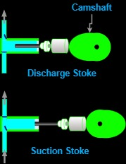

Pumps in (U)HPLC systems
Pumps are mechanical devices that transfer mobile phases from low-pressure reservoirs to high-pressure areas in the system. Their primary function is to maintain a constant flow of the mobile phase through the system, regardless of back pressure caused by flow resistance.
Reciprocating pumps, which are a type of positive displacement pump, are commonly used in (U)HPLC systems. There are two basic designs of reciprocating pumps: piston and plunger. Plunger pumps are the most commonly used in (U)HPLC systems, but some instrument vendors may use piston designs. It is important to note that the two types are not interchangeable, although instrument documents may mistakenly label them as such.
In plunger pumps, a smooth cylindrical plunger slides through a stationary high-pressure seal. In contrast, piston pumps have a high-pressure seal that reciprocates with the piston. Understanding the differences between the two designs is crucial for proper use and maintenance of (U)HPLC systems.
Mechanism of Action: Understanding Reciprocating Pumps
As we have learned about the differences between plunger and piston-based pumps, let’s delve into the mechanism of action of a reciprocating pump. A pump typically consists of a cylinder with a piston or plunger inside, along with check valves at the inlet and outlet. For the purpose of this explanation, we will focus on the plunger design, but the same mechanism of action applies to piston-based pumps as well.

During the suction stroke, the plunger moves to the right (see the figure), causing the chamber inside the cylinder to expand. This expansion results in a drop in pressure, which opens the suction valve and allows fluid to enter through the inlet. The check valves prevent the fluid from flowing back and direct it through the pump. As the suction valve opens, the discharge valve closes.

On the discharge stroke, the plunger moves towards the left (see the figure), pushing the fluid in the cylinder and increasing the pressure. This pressure increase closes the suction valve and opens the discharge valve, allowing the fluid to exit the pump. This process repeats continuously, resulting in a steady flow of fluid through the pump.
Overall, the reciprocating pump’s mechanism of action is straightforward and efficient, making it a popular choice for applications that require precise and consistent flow rates, such as in (U)HPLC systems.
Mechanisms for Driving the Pumps: Crankshaft vs. Camshaft
In a pump, the piston or plunger is responsible for creating the pressure difference that moves fluid through the system. To achieve this, the piston must be driven with a motor. There are two primary mechanisms that can be used to drive the piston: a crankshaft or a camshaft.
A crankshaft is a simple mechanism that is commonly used in industrial applications. It is connected to an electric motor and rotates to generate the reciprocating motion of the piston. The crankshaft is connected to a connecting rod, which in turn is connected to the piston. As the motor turns the crankshaft, the connecting rod moves back and forth, causing the piston to move in and out of the cylinder.
In some pumps, the motor may be directly connected to the piston/plunger, eliminating the need for a crankshaft and connecting rod. This approach is often used in smaller pumps where simplicity and compactness are critical.

A camshaft is another mechanism that can be used to drive a piston pump. It uses a series of cams to generate the reciprocating motion of the piston. The cams are mounted on a rotating shaft and are shaped like oblong circles. The shape of the cam determines the timing and speed of the piston’s motion.
Camshaft-driven piston pumps are often used in applications where precise control of flow rate and pressure is required. The camshaft can be adjusted to change the shape of the cams, which in turn changes the motion of the piston. This allows for fine-tuning of the pump’s performance. However, camshaft-driven pumps can be more complex and expensive than crankshaft-driven pumps, so they are not as commonly used in industrial applications.
In conclusion, the choice of mechanism for driving a piston/plunger pump will depend on the specific requirements of the application. Crankshaft mechanisms are more commonly used in industrial applications due to their simplicity and lower cost, while camshaft mechanisms are often used in research and analytical applications, especially with UHPLCs, where precise control of flow rate and pressure is required.
Notes: